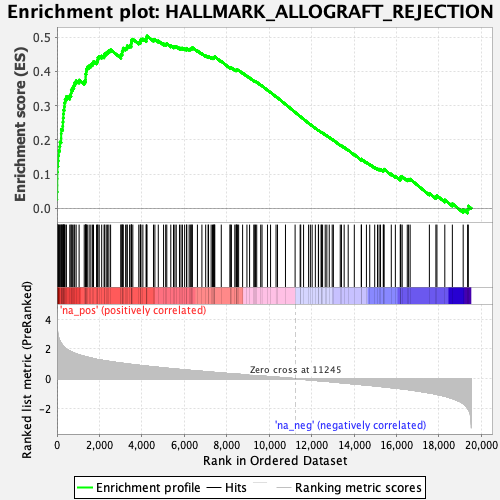
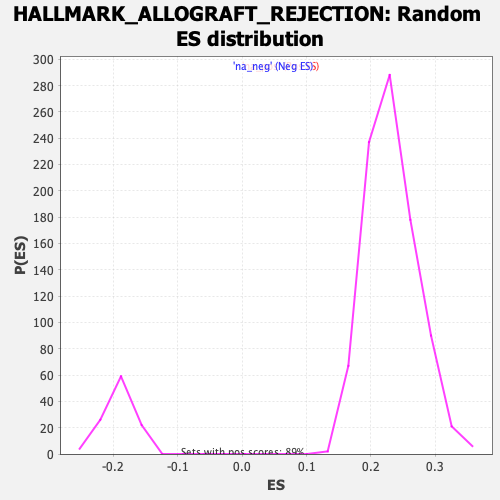

| | | Dataset | Recurrence |
| Phenotype | NoPhenotypeAvailable |
| Upregulated in class | na_pos |
| GeneSet | HALLMARK_ALLOGRAFT_REJECTION |
| Enrichment Score (ES) | 0.5034164 |
| Normalized Enrichment Score (NES) | 2.1795144 |
| Nominal p-value | 0.0 |
| FDR q-value | 0.0 |
| FWER p-Value | 0.0 |
Table: GSEA Results Summary

Fig 1: Enrichment plot: HALLMARK_ALLOGRAFT_REJECTION
Profile of the Running ES Score & Positions of GeneSet Members on the Rank Ordered List
| SYMBOL | RANK IN GENE LIST | RANK METRIC SCORE | RUNNING ES | CORE ENRICHMENT | | 1 | CTSS | 0 | 4.625 | 0.0259 | Yes |
| 2 | CD96 | 3 | 3.953 | 0.0480 | Yes |
| 3 | CD74 | 11 | 3.513 | 0.0674 | Yes |
| 4 | SRGN | 12 | 3.427 | 0.0866 | Yes |
| 5 | CCND2 | 14 | 3.415 | 0.1057 | Yes |
| 6 | SPI1 | 22 | 3.270 | 0.1237 | Yes |
| 7 | CD3D | 49 | 2.919 | 0.1387 | Yes |
| 8 | GPR65 | 59 | 2.843 | 0.1542 | Yes |
| 9 | CD86 | 81 | 2.735 | 0.1684 | Yes |
| 10 | CXCL13 | 125 | 2.557 | 0.1805 | Yes |
| 11 | HCLS1 | 140 | 2.526 | 0.1940 | Yes |
| 12 | IL15 | 194 | 2.396 | 0.2047 | Yes |
| 13 | CXCL9 | 196 | 2.390 | 0.2180 | Yes |
| 14 | IGSF6 | 200 | 2.383 | 0.2313 | Yes |
| 15 | IL18 | 271 | 2.220 | 0.2401 | Yes |
| 16 | CXCR3 | 277 | 2.211 | 0.2522 | Yes |
| 17 | CCL2 | 288 | 2.192 | 0.2640 | Yes |
| 18 | ETS1 | 300 | 2.171 | 0.2756 | Yes |
| 19 | NCR1 | 311 | 2.148 | 0.2872 | Yes |
| 20 | TAP1 | 346 | 2.103 | 0.2972 | Yes |
| 21 | CCR5 | 356 | 2.085 | 0.3084 | Yes |
| 22 | WAS | 380 | 2.062 | 0.3188 | Yes |
| 23 | CAPG | 443 | 1.994 | 0.3268 | Yes |
| 24 | IL4R | 603 | 1.855 | 0.3290 | Yes |
| 25 | FCGR2B | 661 | 1.822 | 0.3362 | Yes |
| 26 | TLR1 | 670 | 1.816 | 0.3460 | Yes |
| 27 | TIMP1 | 737 | 1.769 | 0.3525 | Yes |
| 28 | STAT1 | 797 | 1.736 | 0.3592 | Yes |
| 29 | TLR6 | 833 | 1.705 | 0.3670 | Yes |
| 30 | PTPRC | 902 | 1.670 | 0.3728 | Yes |
| 31 | IL2RG | 1042 | 1.600 | 0.3746 | Yes |
| 32 | IL16 | 1283 | 1.500 | 0.3706 | Yes |
| 33 | CCND3 | 1344 | 1.473 | 0.3758 | Yes |
| 34 | GZMA | 1348 | 1.472 | 0.3839 | Yes |
| 35 | ST8SIA4 | 1349 | 1.471 | 0.3921 | Yes |
| 36 | CCR1 | 1376 | 1.465 | 0.3990 | Yes |
| 37 | CSF1 | 1386 | 1.461 | 0.4067 | Yes |
| 38 | ZAP70 | 1427 | 1.447 | 0.4128 | Yes |
| 39 | ITGAL | 1514 | 1.415 | 0.4163 | Yes |
| 40 | IRF7 | 1595 | 1.387 | 0.4199 | Yes |
| 41 | CD40 | 1669 | 1.364 | 0.4238 | Yes |
| 42 | TRAT1 | 1720 | 1.346 | 0.4287 | Yes |
| 43 | TPD52 | 1864 | 1.297 | 0.4286 | Yes |
| 44 | CCR2 | 1915 | 1.286 | 0.4333 | Yes |
| 45 | PTPN6 | 1927 | 1.284 | 0.4399 | Yes |
| 46 | TAPBP | 1989 | 1.267 | 0.4438 | Yes |
| 47 | IRF4 | 2106 | 1.241 | 0.4448 | Yes |
| 48 | BCL3 | 2219 | 1.214 | 0.4458 | Yes |
| 49 | LCP2 | 2247 | 1.208 | 0.4512 | Yes |
| 50 | CD3G | 2320 | 1.191 | 0.4542 | Yes |
| 51 | NPM1 | 2386 | 1.175 | 0.4574 | Yes |
| 52 | IL12B | 2445 | 1.162 | 0.4609 | Yes |
| 53 | CD79A | 2526 | 1.147 | 0.4632 | Yes |
| 54 | GBP2 | 3014 | 1.048 | 0.4439 | Yes |
| 55 | CD28 | 3015 | 1.048 | 0.4498 | Yes |
| 56 | FASLG | 3070 | 1.037 | 0.4528 | Yes |
| 57 | RPS9 | 3071 | 1.037 | 0.4586 | Yes |
| 58 | GALNT1 | 3109 | 1.030 | 0.4625 | Yes |
| 59 | KRT1 | 3117 | 1.028 | 0.4679 | Yes |
| 60 | NCK1 | 3234 | 1.009 | 0.4676 | Yes |
| 61 | F2 | 3295 | 0.997 | 0.4701 | Yes |
| 62 | CD1D | 3310 | 0.992 | 0.4749 | Yes |
| 63 | LY86 | 3421 | 0.972 | 0.4747 | Yes |
| 64 | FGR | 3495 | 0.959 | 0.4763 | Yes |
| 65 | B2M | 3497 | 0.958 | 0.4816 | Yes |
| 66 | LIF | 3510 | 0.956 | 0.4863 | Yes |
| 67 | ELANE | 3514 | 0.955 | 0.4915 | Yes |
| 68 | IL1B | 3573 | 0.946 | 0.4938 | Yes |
| 69 | NME1 | 3854 | 0.900 | 0.4844 | Yes |
| 70 | IL2RB | 3924 | 0.886 | 0.4858 | Yes |
| 71 | SOCS1 | 3932 | 0.885 | 0.4904 | Yes |
| 72 | ACHE | 3958 | 0.881 | 0.4941 | Yes |
| 73 | FLNA | 4047 | 0.867 | 0.4944 | Yes |
| 74 | RPL3L | 4205 | 0.843 | 0.4910 | Yes |
| 75 | IFNGR1 | 4208 | 0.843 | 0.4956 | Yes |
| 76 | IKBKB | 4221 | 0.841 | 0.4997 | Yes |
| 77 | CD247 | 4241 | 0.837 | 0.5034 | Yes |
| 78 | ITK | 4547 | 0.794 | 0.4921 | No |
| 79 | CRTAM | 4613 | 0.784 | 0.4931 | No |
| 80 | CDKN2A | 4773 | 0.761 | 0.4892 | No |
| 81 | ELF4 | 5022 | 0.721 | 0.4804 | No |
| 82 | JAK2 | 5122 | 0.708 | 0.4793 | No |
| 83 | ABI1 | 5174 | 0.701 | 0.4805 | No |
| 84 | NLRP3 | 5363 | 0.675 | 0.4746 | No |
| 85 | MMP9 | 5490 | 0.658 | 0.4718 | No |
| 86 | IL9 | 5555 | 0.650 | 0.4721 | No |
| 87 | AKT1 | 5619 | 0.641 | 0.4725 | No |
| 88 | GZMB | 5772 | 0.622 | 0.4681 | No |
| 89 | IL7 | 5844 | 0.613 | 0.4679 | No |
| 90 | BCL10 | 5911 | 0.605 | 0.4678 | No |
| 91 | THY1 | 6015 | 0.592 | 0.4658 | No |
| 92 | CCL5 | 6108 | 0.580 | 0.4643 | No |
| 93 | PRF1 | 6113 | 0.579 | 0.4674 | No |
| 94 | CCL19 | 6227 | 0.564 | 0.4647 | No |
| 95 | CD3E | 6281 | 0.557 | 0.4651 | No |
| 96 | IL11 | 6323 | 0.552 | 0.4661 | No |
| 97 | MTIF2 | 6360 | 0.549 | 0.4673 | No |
| 98 | INHBA | 6377 | 0.546 | 0.4695 | No |
| 99 | IL12A | 6617 | 0.519 | 0.4601 | No |
| 100 | IL13 | 6829 | 0.494 | 0.4519 | No |
| 101 | EGFR | 7007 | 0.468 | 0.4454 | No |
| 102 | EIF3A | 7121 | 0.455 | 0.4421 | No |
| 103 | KLRD1 | 7141 | 0.453 | 0.4437 | No |
| 104 | RPS19 | 7264 | 0.439 | 0.4398 | No |
| 105 | CD7 | 7329 | 0.431 | 0.4389 | No |
| 106 | CARTPT | 7377 | 0.426 | 0.4389 | No |
| 107 | BRCA1 | 7400 | 0.423 | 0.4401 | No |
| 108 | LCK | 7414 | 0.421 | 0.4418 | No |
| 109 | EREG | 7436 | 0.419 | 0.4431 | No |
| 110 | ICOSLG | 7742 | 0.383 | 0.4295 | No |
| 111 | DYRK3 | 8157 | 0.336 | 0.4099 | No |
| 112 | EIF5A | 8160 | 0.336 | 0.4117 | No |
| 113 | ITGB2 | 8220 | 0.329 | 0.4105 | No |
| 114 | BCAT1 | 8380 | 0.312 | 0.4040 | No |
| 115 | CCL7 | 8439 | 0.306 | 0.4028 | No |
| 116 | CD47 | 8454 | 0.304 | 0.4037 | No |
| 117 | INHBB | 8471 | 0.303 | 0.4046 | No |
| 118 | RIPK2 | 8510 | 0.299 | 0.4043 | No |
| 119 | ICAM1 | 8560 | 0.295 | 0.4035 | No |
| 120 | TGFB1 | 8747 | 0.276 | 0.3954 | No |
| 121 | CD8B | 8951 | 0.254 | 0.3863 | No |
| 122 | IFNAR2 | 9076 | 0.239 | 0.3812 | No |
| 123 | CFP | 9274 | 0.215 | 0.3723 | No |
| 124 | IL2RA | 9317 | 0.211 | 0.3713 | No |
| 125 | MBL2 | 9357 | 0.207 | 0.3704 | No |
| 126 | IFNGR2 | 9412 | 0.201 | 0.3688 | No |
| 127 | F2R | 9600 | 0.180 | 0.3601 | No |
| 128 | TAP2 | 9662 | 0.173 | 0.3579 | No |
| 129 | CD8A | 9919 | 0.148 | 0.3455 | No |
| 130 | LYN | 10064 | 0.132 | 0.3388 | No |
| 131 | RPL39 | 10323 | 0.102 | 0.3260 | No |
| 132 | TNF | 10392 | 0.096 | 0.3231 | No |
| 133 | PRKCB | 10767 | 0.054 | 0.3040 | No |
| 134 | IL10 | 11221 | 0.003 | 0.2806 | No |
| 135 | EIF3D | 11459 | -0.023 | 0.2685 | No |
| 136 | IL2 | 11486 | -0.026 | 0.2673 | No |
| 137 | MAP4K1 | 11620 | -0.041 | 0.2607 | No |
| 138 | MAP3K7 | 11857 | -0.070 | 0.2488 | No |
| 139 | C2 | 11940 | -0.079 | 0.2451 | No |
| 140 | HDAC9 | 12024 | -0.091 | 0.2413 | No |
| 141 | SOCS5 | 12175 | -0.109 | 0.2341 | No |
| 142 | CD2 | 12318 | -0.126 | 0.2275 | No |
| 143 | HIF1A | 12326 | -0.126 | 0.2278 | No |
| 144 | CSK | 12444 | -0.140 | 0.2226 | No |
| 145 | ACVR2A | 12469 | -0.143 | 0.2221 | No |
| 146 | UBE2N | 12516 | -0.149 | 0.2206 | No |
| 147 | IL18RAP | 12640 | -0.163 | 0.2151 | No |
| 148 | STAT4 | 12717 | -0.173 | 0.2122 | No |
| 149 | IRF8 | 12830 | -0.187 | 0.2074 | No |
| 150 | GCNT1 | 12969 | -0.207 | 0.2015 | No |
| 151 | RPS3A | 13025 | -0.216 | 0.1998 | No |
| 152 | IL12RB1 | 13349 | -0.259 | 0.1846 | No |
| 153 | CCL22 | 13406 | -0.265 | 0.1832 | No |
| 154 | IL4 | 13533 | -0.284 | 0.1783 | No |
| 155 | PSMB10 | 13723 | -0.310 | 0.1702 | No |
| 156 | MRPL3 | 14011 | -0.343 | 0.1573 | No |
| 157 | IL27RA | 14338 | -0.388 | 0.1426 | No |
| 158 | CD80 | 14350 | -0.390 | 0.1443 | No |
| 159 | FAS | 14582 | -0.420 | 0.1347 | No |
| 160 | CD4 | 14738 | -0.440 | 0.1291 | No |
| 161 | IL6 | 14972 | -0.474 | 0.1197 | No |
| 162 | UBE2D1 | 15105 | -0.494 | 0.1157 | No |
| 163 | SIT1 | 15179 | -0.504 | 0.1147 | No |
| 164 | TRAF2 | 15247 | -0.516 | 0.1142 | No |
| 165 | DEGS1 | 15376 | -0.535 | 0.1105 | No |
| 166 | TGFB2 | 15391 | -0.537 | 0.1128 | No |
| 167 | LTB | 15416 | -0.541 | 0.1146 | No |
| 168 | CCL11 | 15754 | -0.594 | 0.1005 | No |
| 169 | EIF3J | 15946 | -0.627 | 0.0942 | No |
| 170 | GLMN | 16176 | -0.659 | 0.0860 | No |
| 171 | NCF4 | 16196 | -0.663 | 0.0888 | No |
| 172 | STAB1 | 16199 | -0.663 | 0.0924 | No |
| 173 | IFNG | 16267 | -0.675 | 0.0927 | No |
| 174 | TLR3 | 16507 | -0.717 | 0.0844 | No |
| 175 | RPL9 | 16570 | -0.729 | 0.0853 | No |
| 176 | PF4 | 16643 | -0.742 | 0.0857 | No |
| 177 | CCL13 | 17549 | -0.948 | 0.0442 | No |
| 178 | NOS2 | 17856 | -1.033 | 0.0342 | No |
| 179 | PRKCG | 17905 | -1.047 | 0.0376 | No |
| 180 | TLR2 | 18276 | -1.168 | 0.0250 | No |
| 181 | EIF4G3 | 18632 | -1.320 | 0.0140 | No |
| 182 | CD40LG | 19142 | -1.663 | -0.0029 | No |
| 183 | APBB1 | 19351 | -1.976 | -0.0026 | No |
| 184 | ABCE1 | 19384 | -2.051 | 0.0072 | No |
Table: GSEA details [plain text format]

Fig 2: HALLMARK_ALLOGRAFT_REJECTION: Random ES distribution
Gene set null distribution of ES for HALLMARK_ALLOGRAFT_REJECTION